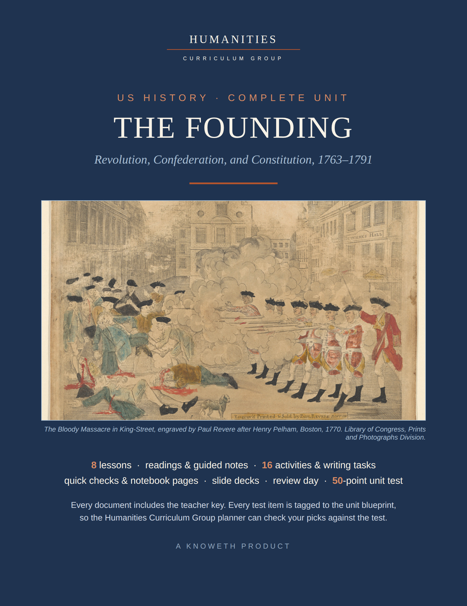

The eleventh complete unit and the second in the course, included with All-Access. Eight lessons, a review day, and the unit test, fifty-one documents in all, plus a slide deck with full speaker notes and a teacher notes document for every lesson. Every PDF includes the teacher key, and every document follows the same print standard as the sample unit: black text, open writing space, no ink-heavy design. If you are new here, the Progressive Era unit is the free sample, and it runs on the same plate and the same planner. Primary source work for this unit lives in the bank at The Primary Source Project, which holds audited sources for this era.
Get this unit with All-Access See the free sample unit Plan this unit
The unit opens with the empire's bill. Britain's debt had doubled in the French and Indian War, an army stood in America, and Grenville's ministry resolved the colonies should pay for their defense. The Stamp Act of 1765, the first tax laid directly on the colonies, drew an answer in three registers: argument, in the Virginia Resolves and the Stamp Act Congress; combination, in household boycotts; and crowd action that drove the stamp distributors to resign. Parliament repealed the act and claimed, in the Declaratory Act, power to legislate in all cases whatsoever. The Townshend duties followed, troops came to Boston, and on March 5, 1770, soldiers fired on a crowd and killed five men, the night Revere's engraving fixed as a massacre.
A protest over tea became a war. The Tea Act let the East India Company sell tea with the tax on it, so every cup conceded Parliament's right to tax; Boston emptied 342 chests into the harbor, and Parliament answered with the Intolerable Acts. The First Continental Congress built a second government from the boycott, and in April 1775 shooting started at Lexington and Concord. Paine's Common Sense recast the quarrel: the villain was not a tax or a minister but monarchy. Congress voted independence on July 2, 1776, and adopted the Declaration on July 4, its preamble stating government by consent and equal rights, its grievances charged against the king alone, and one passage, Jefferson's charge of a war against human nature in the slave trade, struck out before adoption.
The war takes two lessons, one for its campaigns and one for the peoples who fought, paid, and waited. The Continental Army survived on endurance: Trenton and Princeton, Saratoga and the French alliance it won, Valley Forge, and the southern campaigns that ended at Yorktown and in the Treaty of Paris. The other war ran through households and nations. Dunmore's Proclamation offered freedom to the enslaved who reached British lines, some five thousand Black soldiers served in American ranks, women ran farms and followed armies, Native nations chose their sides and paid the war's highest territorial price, and sixty thousand Loyalists went into exile.
Peace exposed the government's limits. The Articles won the war and built a national domain in the land ordinances, but Congress could not tax, compel a state, or pay its army, and Shays's Rebellion sent fifty-five men to Philadelphia. The Convention answered through the Great Compromise, shadowed by the three-fifths count that built slavery into the House unnamed. Ratification ran in print, The Federalist against Brutus, eased by promised amendments: the Bill of Rights of 1791, the skeptics' monument inside the Federalists' victory. The unit is organized around the essential question, “Why did the colonies break with Britain, and what did Americans build in the place of the empire they rejected?” A review day gives students a study guide and crossword before the 50-point unit test. Every test item is tagged in the key to a published 15-entry blueprint, so teachers can see what the test asks and where it was taught. The planner turns those choices into a calendar and checks the work against the blueprint, naming any gap while there is time to close it.

Print it for the front of the unit packet, or keep it as the first page of the digital bundle. The cover ships with the unit in All-Access. The three previews further down show the full plate, two real pages from the lessons, and the test key's blueprint tags.
Test blueprint: the revenue program: Britain's war debt, the Stamp Act, and the first resistance; repeal and its limits: the Declaratory Act, the Townshend duties, and the Boston Massacre
Test blueprint: tea and coercion: the Tea Act, the Boston Tea Party, and the Intolerable Acts; Congress and the first shots: the First Continental Congress, Lexington and Concord, and the road from the Olive Branch to the Proclamation of Rebellion
Test blueprint: the argument for independence: Common Sense and the republican turn; the Declaration: natural rights, the grievances against the king, and the deleted passage
Test blueprint: survival and Saratoga: the Continental Army's endurance and the French alliance; the war won: the southern campaigns, Yorktown, and the Treaty of Paris
Test blueprint: the peoples of the war: Black Americans, women, and Native nations; the home front and the Loyalists: inflation, sacrifice, and the Loyalist exodus
Test blueprint: the Articles of Confederation: structure and the land ordinances; the Confederation in crisis: debt, Shays's Rebellion, and the call for a convention
Test blueprint: framing the Constitution: the Virginia and New Jersey Plans and the Great Compromise; the Constitution's design: federalism, separation of powers, and slavery's compromises
Test blueprint: ratification and the Bill of Rights: Federalists, Anti-Federalists, and the first amendments
The test is 50 points: matching, multiple choice, a source-based section, and an essay, built on Paine's Common Sense (1776), the preamble of the Declaration of Independence, and Madison's Federalist No. 10, each quoted verbatim from the audited TPSP records with every cut marked.
Three pages from the listing, built from the actual documents.
The fifteen entries the unit test assesses. Every assignment above is tagged to the entries it teaches, which is what the planner's coverage check reads.
| # | Blueprint entry | Taught in |
|---|---|---|
| 1 | The revenue program: Britain's war debt, the Stamp Act, and the first resistance | Lesson 1 |
| 2 | Repeal and its limits: the Declaratory Act, the Townshend duties, and the Boston Massacre | Lesson 1 |
| 3 | Tea and coercion: the Tea Act, the Boston Tea Party, and the Intolerable Acts | Lesson 2 |
| 4 | Congress and the first shots: the First Continental Congress, Lexington and Concord, and the road from the Olive Branch to the Proclamation of Rebellion | Lesson 2 |
| 5 | The argument for independence: Common Sense and the republican turn | Lesson 3 |
| 6 | The Declaration: natural rights, the grievances against the king, and the deleted passage | Lesson 3 |
| 7 | Survival and Saratoga: the Continental Army's endurance and the French alliance | Lesson 4 |
| 8 | The war won: the southern campaigns, Yorktown, and the Treaty of Paris | Lesson 4 |
| 9 | The peoples of the war: Black Americans, women, and Native nations | Lesson 5 |
| 10 | The home front and the Loyalists: inflation, sacrifice, and the Loyalist exodus | Lesson 5 |
| 11 | The Articles of Confederation: structure and the land ordinances | Lesson 6 |
| 12 | The Confederation in crisis: debt, Shays's Rebellion, and the call for a convention | Lesson 6 |
| 13 | Framing the Constitution: the Virginia and New Jersey Plans and the Great Compromise | Lesson 7 |
| 14 | The Constitution's design: federalism, separation of powers, and slavery's compromises | Lesson 7 |
| 15 | Ratification and the Bill of Rights: Federalists, Anti-Federalists, and the first amendments | Lesson 8 |